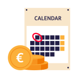

Save at a rate you can see before you decide
The rate, the conditions and the next step sit together, in one short flow.

The rate, and the conditions beside it
Your interest rate is [TAUX]. The conditions that come with it sit next to the figure, not in a document at the bottom.
You can open the account with [MONTANT]. There is no minimum balance you have to hold, and you decide when to add money and when to take it out.
- Interest rate: [TAUX], with the conditions beside it.
- Opening amount: from [MONTANT].
- No minimum balance to keep the account open.
- Add money or take it out whenever you want.
Open your account in a few minutes
You can open a savings account in the ING app or on ing.be. Have your ID and your phone ready, and you can finish the application in one go.
Would you rather speak to someone first? Call us or book an appointment, and we will go through the rate and the conditions with you before you decide.
- Choose your savings account.
- Confirm who you are with your ID.
- Transfer the amount you want to start with.
- Your account is ready to use.
Your money stays within reach
A savings account is not a locked product. Your money stays available, and you choose when to move it.
Your savings are covered by the Belgian deposit protection scheme up to [MONTANT]. If you want that explained before you open the account, ask us and we will walk you through it.
- Take your money out when you need it.
- See your balance and your interest in the app.
- Deposit protection up to [MONTANT].
Open it before September
September is when many people take a fresh look at their savings. The offer here is complete today, so you can open your account now and have it running before the new season starts.
You do not have to wait for a branch appointment or a phone call to get started, and you can change the amount you save at any time.
- The rate is [TAUX] for everyone who opens the account.
- Open it in the app, in a few minutes.
- Change your monthly amount whenever your plans change.
Gives the savings offer its seasonal emphasis and presents it as complete and current before the early-September window, which is what the September timing recommendation asks for.